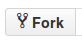
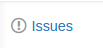
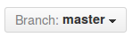
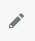
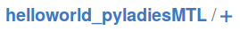

Github Party!
Thursday, 8 October, 2015
Savoir Faire Linux, Montreal
https://www.savoirfairelinux.com/GitHub Party
Introduction
- Link to the presentation.
- Finding a project to collaborate in
https://github.com/explore
https://github.com/showcases
GitHub Party
Parts
Part 0
Do you have your account already?Git
Git is a free and open source distributed version control system designed to handle everything from small to very large projects with speed and efficiency.
Git
Git is a widely used version control system for software development. It is a distributed revision control system with an emphasis on speed, data integrity, and support for distributed, non-linear workflows.https://en.wikipedia.org/wiki/Git
Git
-
More technical definition and to really understand Git:
-
Setting up Git:
GitHub
GitHub is a Web-based Git repository hosting service. It offers a lot of the functionality of Git as well as adding its own features.
Part I
Repositories
A repository is the basic unit of GitHub, most commonly a single project. Repositories can contain folders and files, including images – anything your project needs.Repositories
https://github.com/bluciam/helloworld_pyladiesMTLPart I
- Repositories
- Forks
- Issues
- Branches
- Local changes
- Commits
Forks
A fork is a copy of a repository. Forking a repository allows you to freely experiment with changes without affecting the original project.Most commonly, forks are used to either propose changes to someone else's project or to use someone else's project as a starting point for your own idea.
Forks
Let's create a fork
- Login into your GitHub account.
- Head over to https://github.com/bluciam/helloworld_pyladiesMTL
-
Find the Fork tab and click on it.

Forks
Full instructions with commands for local repository:https://help.github.com/articles/fork-a-repo/
Forks
Synchronizing your fork with the master repository.
There are two ways:
- Making a pull-request into your own repository.
- Using the command line.
Part I
- Repositories
- Forks
- Issues
- Branches
- Local changes
- Commits
Issues
An Issue is a note on a repository about something that needs attention. It could be a bug, a feature request, a question or lots of other things.
Issues
Let's create an issue
PyLadies Montreal needs a logo! https://github.com/bluciam/helloworld_pyladiesMTLLet's comment on an issue!
Issues
Your turn!
- https://github.com/bluciam/helloworld_pyladiesMTL
- Click on the issues link, to the right.
 - Click on New Issue.
- Go Wild! Create! Comment!
Part I
- Repositories
- Forks
- Issues
- Branches
- Local changes
- Commits
Branches
Branching is the way to work on different parts of a repository at one time.Branches

Branches
Let's create a branch
- Head over to
https://github.com/<your-github-handle>
/helloworld_pyladiesMTL -
Find the Branch: master tab and click on it.
 - Enter the name of the new branch: translate-README.
Branches
Full instructions at https://help.github.com/articles/creating-and-deleting-branches-within-your-repository/Part I
- Repositories
- Issues
- Forks
- Branches
- Local changes
- Commits
Make a change
Change is good!
Change brings happiness!
- Head over to https://github.com/bluciam/helloworld_pyladiesMTL
- Click on the issues link.
- Choose an issue.
Make a change
Let's do it!
- Head over to your own account.
https://github.com/<your-github-handle>
/helloworld_pyladiesMTL - Choose the branch you want to make the change in.
- You can either add a file or modify an existing one.
- Go wild!
Make a change
Let's do it!
Changes to a file can be done by clicking on the pencil icon in the upper right corner.
Add a file by clicking on the plus sign after the directory name.

Make a change
- Make a change in the master branch.
- And in another branch.
- In the same line.
- Commit the changes separately.
Part I
- Repositories
- Issues
- Forks
- Branches
- Local changes
- Commits
Commit your changes
Commits are the heart of git and GitHub. They are the saved changes on the repository.Each commit should have a message:
- Think that you are writing an email to a future contributor who will read this five years from now.
- Explain why the change.
- Remeber that git can already answer who, when and what, so no need to add these.
Commit your changes
- Make your changes.
- Add a one-liner summarizing the change.
- Add a summary of the change.
-
Click on the
Commit changesbutton. - That's it!
Commit messages form a story of the project.
Part I
- Repositories
- Issues
- Forks
- Branches
- Local changes
- Commits
Breathe!
Smile!
Part 2
Sharing changes!
Pull request
Pull Requests are the heart of collaboration on GitHub. When you make a pull request, you’re proposing your changes and requesting that someone pull in your contribution - aka merge them into their branch.Pull request
As soon as you make a change, you can open a Pull Request. People use Pull Requests to start a discussion about commits (code review) even before the code is finished. This way you can get feedback as you go or help when you’re stuck.Pull request
Let's create a Pull Request
-
https://github.com/<your-github-handle>
/helloworld_pyladiesMTL - Find the link to Pull Request on the right.
- Click on it.
- Click on the New pull request button.
- Click on Create pull request.
You are presented with a screen to enter a message and to choose which branch to ask the request on, if there are many choices.
Pull request
Instructions athttps://help.github.com/articles/creating-a-pull-request/
Pull request
Let's see it!
The best is to see it in action...Part 2
- Pull request
- Comparing differences
- Blame
- Synching your fork
Comparing changes
It is another way to get to a Pull Request.Comparing changes
- Head over to your own account.
https://github.com/<your-github-handle>
/helloworld_pyladiesMTL - Find the green button at the top next to the Branch
button. That will show you directly the differences between the
main repository and your local changes.
Comparing changes
Let's see it!
Again, the best is to see it in action...Comparing changes
Click on the number next to the fork button to see the network graph.Part 2
- Pull request
- Comparing differences
- Blame
- Synching your fork
Blame
The blame command is a Git feature, designed to help
you determine who made changes to a file.
Despite its negative-sounding name, git blame is
actually pretty
innocuous; its primary function is to point out who changed which
lines in a file, and why. It can be a useful tool to identify changes
in your code.
Blame
Instructions athttps://help.github.com/articles/using-git-blame-to-trace-changes-in-a-file/
Part 2
- Pull request
- Comparing differences
- Blame
- Synching your fork
Synching your fork
- Click on the compare button.
- Click on Compare across forks.
- Choose the branches that are difference.
Part 2
- Pull request
- Comparing differences
- Blame
- Synching your fork
Breathe!
Smile!
Part 3
Collaboration!
- Create a repository
- Add collaborators
- Be Social
Create a repository
- We are going to create a super heroine project!
- We will call it
super-heroines-pyladiesMTL. - Let's do it!
Part 3
- Create a repository
- Add collaborators
- Be Social
Add collaborators
https://help.github.com/articles/adding-collaborators-to-a-personal-repository/Part 3
- Create a repository
- Add collaborators
- Be Social
Part 3
- Create a repository
- Add collaborators
- Be Social
Part 4
Your turn!
- Create your own repository
- Ideas:
- Python tutorial exercises
- Your thesis
- Talks
- Your CV
- Your coding project
What is next?
What is next?
Interaction between the git command line and github, that is, your local repository and repo in the cloud.